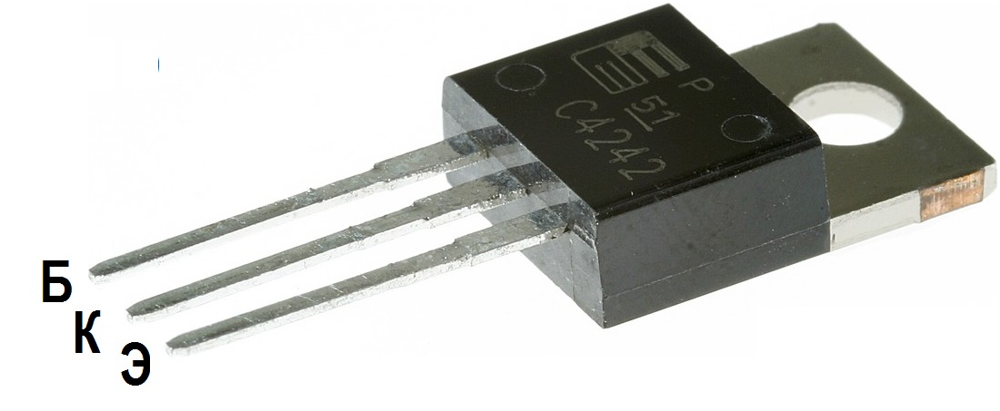

Транзистор 2SC4242
Транзисторы 2SC4242 кремниевые структуры n-p-n переключательные. Предназначены для применения в импульсных, переключающих и усилительных устройствах. Тип корпуса: TO-220AB.
Обозначение на корпусе транзистора 2SC4242 часто наносится без первой цифры и буквы, т.е. маркируется как "C4242".

Рис. 1 - Внешний вид и цоколевка транзистора 2SC4242
Таблица 1
| Структура | n-p-n |
| Напряжение коллектор-эмиттер, не более | 400 В |
| Напряжение коллектор-база, не более | 450 В |
| Напряжение эмиттер-база, не более:V | 8 В |
| Ток коллектора, не более | 7 А |
| Рассеиваемая мощность коллектора, не более | 40 Вт |
| Коэффициент усиления транзистора по току (hfe): | от 10 |
| Корпус: | TO-220 |
Аналоги
- SC2335, 2SC2335K, 2SC2335L, 2SC2335M,
- 2SC4106, 2SC4106L, 2SC4106M, 2SC4106N,
- 2SC4107, 2SC4107-L, 2SC4107-M, 2SC4107-N,
- 2SC4108, 2SC4108-L, 2SC4108-M, 2SC4108-N,
- 2SC4161, 2SC4161-L, 2SC4161-M, 2SC4161-N,
- 2SC4162, 2SC4162-L, 2SC4162-M, 2SC4162-N,
- 2SC4163, 2SC4163-L, 2SC4163-M, 2SC4163-N,
- 2SC4164, 2SC4164-L, 2SC4164-M, 2SC4164-N,
- MJE18008, MJE18008G, MJF18008, MJF18008G,
- STD13007, STD13007-A, STD13007-B,
- STD13007FC, STD13007FC-A, STD13007FC-B,
- STD13007P, STD13007P-A, STD13007P-B